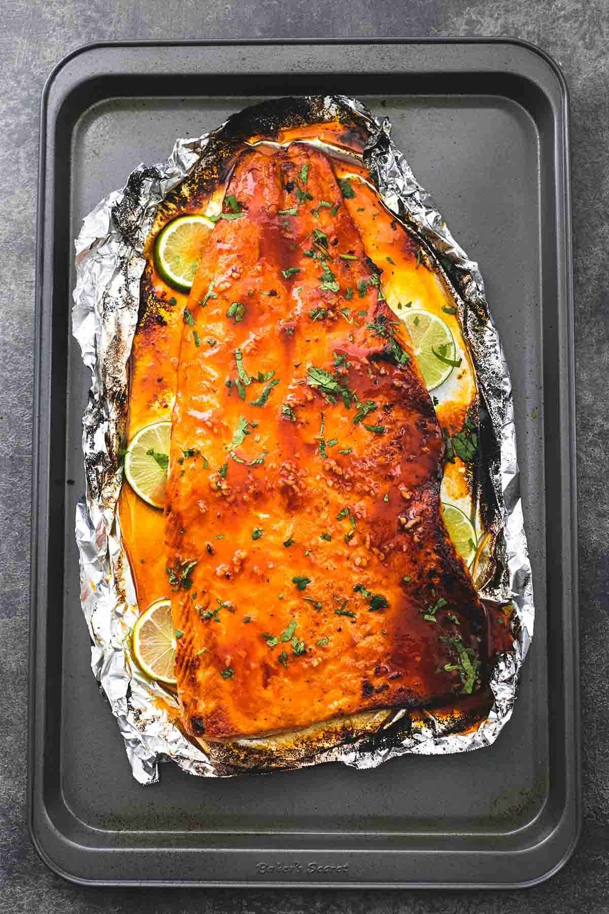

Honey Sriracha Salmon

Description
This baked salmon is so flaky and tender, it just melts in your mouth.
And the best part is that this only requires about 30 minutes start to finish.
Whip up a quick sauce on the stove, then pour it over your salmon and bake for
about 20 ish minutes. Top it will a little extra sauce and some chopped cilantro
and you’re set. Easily one of the best (if not THE best) salmon dishes you have
ever tasted.
Ingredients
- 1 large salmon (16oz)
- 2 tablespoons butter
- ⅓ cup honey
- ⅓ cup sriracha
- 2 limes
- 2 tablespoons soy sauce
- 1 teaspoon minced garlic
- 1 tablespoon freshly chopped cilantro
- salt and pepper to taste
Steps
- Preheat oven to 400 degrees. Line a baking sheet with foil, grease lightly,
and lay salmon on top. Season salmon with salt and pepper to taste. Slice one
lime thinly, and slice the slices under the edges of the salmon.
- In a medium sauce pan over medium-high heat, melt butter. Stir in honey, sriracha
sauce, juice of one lime (about 1 tablespoon), soy sauce, and garlic. Bring to a boil,
then reduct to medium heat and cook for 3-4 minutes longer.
- Pour 2/3 of the sauce over the salmon (reserve remaining sauce for later) and use a
spoon or spatula to make sure the sauce covers all of the salmon (you just don't want
any "dry" spots).
- Fold the edges of the foil up around the salmon so the sauce doesn't spill out
everywhere (the foil doesn't need to completely cover the salmon).
- Bake for 15 minutes, then switch to broil and cook another 4-5 minutes until the very
edges of the salmon begin to char slightly - watch carefully so the whole salmon doesn't
burn.
- Top salmon with reserved sauce and chopped cilantro and serve.